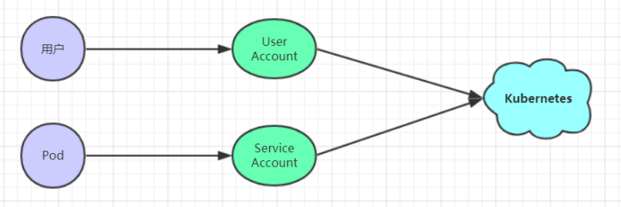
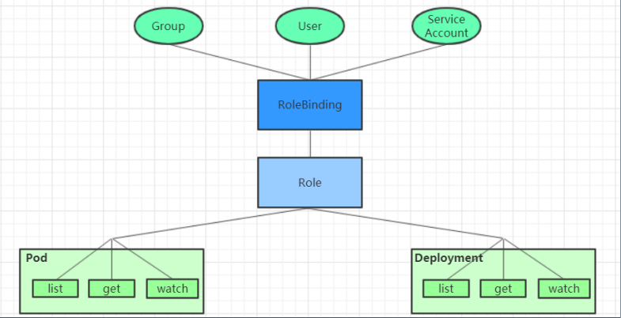

17.Kubernetes-安全认证
Kubernetes-安全认证
Kubernetes-安全认证
在 Kubernetes 集群中，客户端通常有两类：
User Account：一般是独立于 kubernetes 之外的其他服务管理的用户账号。
Service Account：kubernetes 管理的账号，用于为 Pod 中的服务进程在访问 Kubernetes 时提供身份标识。

ApiServer是访问及管理资源对象的唯一入口。任何一个请求访问 ApiServer，都要经过下面三个流程：
Authentication（认证）：身份鉴别，只有正确的账号才能够通过认证
Authorization（授权）： 判断用户是否有权限对访问的资源执行特定的动作
Admission Control（准入控制）：用于补充授权机制以实现更加精细的访问控制功能。
认证管理
Kubernetes 集群安全的最关键点在于如何识别并认证客户端身份，它提供了3种客户端身份认证方式：
- HTTP Base认证：通过用户名+密码的方式认证
1 | 这种认证方式是把“用户名:密码”用BASE64算法进行编码后的字符串放在 HTTP 请求中的 Header Authorization 域里发送给服务端。服务端收到后进行解码，获取用户名及密码，然后进行用户身份认证的过程。 |
- HTTP Token认证：通过一个 Token 来识别合法用户
1 | 这种认证方式是用一个很长的难以被模仿的字符串--Token来表明客户身份的一种方式。每个Token对应一个用户名，当客户端发起API调用请求时，需要在HTTP Header里放入Token，API Server接到Token后会跟服务器中保存的token进行比对，然后进行用户身份认证的过程。 |
- HTTPS证书认证：基于 CA 根证书签名的双向数字证书认证方式
1 | 这种认证方式是安全性最高的一种方式，但是同时也是操作起来最麻烦的一种方式。 |
注意: Kubernetes允许同时配置多种认证方式，只要其中任意一个方式认证通过即可
授权管理
授权发生在认证成功之后，通过认证就可以知道请求用户是谁。然后 Kubernetes 会根据事先定义的授权策略来决定用户是否有权限访问，这个过程就称为授权。
每个发送到 ApiServer 的请求都带上了用户和资源的信息：比如发送请求的用户、请求的路径、请求的动作等，授权就是根据这些信息和授权策略进行比较，如果符合策略，则认为授权通过，否则会返回错误。
API Server 目前支持以下几种授权策略：
AlwaysDeny：表示拒绝所有请求，一般用于测试
AlwaysAllow：允许接收所有请求，相当于集群不需要授权流程（Kubernetes默认的策略）
ABAC：基于属性的访问控制，表示使用用户配置的授权规则对用户请求进行匹配和控制
Webhook：通过调用外部 REST 服务对用户进行授权
Node：是一种专用模式，用于对kubelet发出的请求进行访问控制
RBAC：基于角色的访问控制（kubeadm安装方式下的默认选项）
RBAC（Role-Based Access Control）基于角色的访问控制，主要是在描述一件事情：给哪些对象授予了哪些权限。 其中涉及到了下面几个概念：
对象：User、Groups、ServiceAccount
角色：代表着一组定义在资源上的可操作动作(权限)的集合
绑定：将定义好的角色跟用户绑定在一起
RBAC 引入了4个顶级资源对象
Role、ClusterRole：角色，用于指定一组权限
RoleBinding、ClusterRoleBinding：角色绑定，用于将角色（权限）赋予给对象

Role，ClusterRole
一个角色就是一组权限的集合，这里的权限都是许可形式的（白名单）
1 | # Role只能对命名空间内的资源进行授权，需要指定nameapce |
1 | # ClusterRole可以对集群范围内资源、跨namespaces的范围资源、非资源类型进行授权 |
RoleBinding、ClusterRoleBinding
角色绑定用来把一个角色绑定到一个目标对象上，绑定目标可以是User、Group 或者 ServiceAccount。
1 | # RoleBinding可以将同一namespace中的subject绑定到某个Role下，则此subject即具有该Role定义的权限 |
1 | # ClusterRoleBinding在整个集群级别和所有namespaces将特定的subject与ClusterRole绑定，授予权限 |
RoleBinding 引用 ClusterRole 授权
一种很常用的做法就是，集群管理员为集群范围预定义好一组角色（ClusterRole），然后在多个命名空间中重复使用这些 ClusterRole。这样可以大幅提高授权管理工作效率，也使得各个命名空间下的基础性授权规则与使用体验保持一致。
1 | # 虽然authorization-clusterrole是一个集群角色，但是因为使用了RoleBinding |
准入控制
准入控制是一个可配置的控制器列表，可以通过在 Api-Server 上通过命令行设置选择执行哪些准入控制器：
1 | --admission- |
只有当所有的准入控制器都检查通过之后，apiserver 才执行该请求，否则返回拒绝。
AlwaysAdmit：允许所有请求
AlwaysDeny：禁止所有请求，一般用于测试
AlwaysPullImages：在启动容器之前总去下载镜像
DenyExecOnPrivileged：它会拦截所有想在 Privileged Container 上执行命令的请求
ImagePolicyWebhook：这个插件将允许后端的一个 Webhook 程序来完成admission controller的功能。
Service Account：实现 ServiceAccount 实现了自动化
SecurityContextDeny：这个插件将使用 SecurityContext 的 Pod 中的定义全部失效
ResourceQuota：用于资源配额管理目的，观察所有请求，确保在namespace上的配额不会超标
LimitRanger：用于资源限制管理，作用于 namespace 上，确保对 Pod 进行资源限制
InitialResources：为未设置资源请求与限制的 Pod，根据其镜像的历史资源的使用情况进行设置
NamespaceLifecycle：如果尝试在一个不存在的 namespace 中创建资源对象，则该创建请求将被拒绝。当删除一个 namespace 时，系统将会删除该 namespace 中所有对象。
DefaultStorageClass：为了实现共享存储的动态供应，为未指定 StorageClass 或 PV 的 PVC 尝试匹配默认的 StorageClass，尽可能减少用户在申请 PVC 时所需了解的后端存储细节
DefaultTolerationSeconds：这个插件为那些没有设置 forgiveness tolerations 并具有 notready:NoExecute 和 unreachable:NoExecute 两种 taints 的 Pod 设置默认的“容忍”时间，为5min
PodSecurityPolicy：这个插件用于在创建或修改 Pod 时决定是否根据 Pod 的security context 和可用的 PodSecurityPolicy 对 Pod 的安全策略进行控制